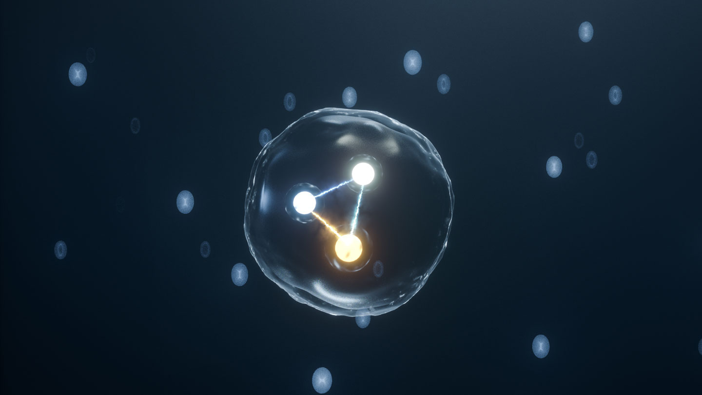

O quark, na física de partículas, é uma partícula elementar e um de dois constituintes fundamentais da matéria. Quarks se combinam para formar partículas compostas chamadas hádrons das quais as mais estáveis desse tipo são os prótons e os nêutrons, que são os principais componentes dos núcleos atômicos.
Importância dos Quarks
Quarks se combinam para formar partículas compostas chamadas hádrons das quais as mais estáveis desse tipo são os prótons e os nêutrons, que são os principais componentes dos núcleos atômicos.